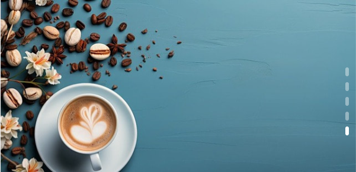

npm i swiper --save
import { register } from 'swiper/element/bundle';
register();
使用自定义元素构建
<swiper-container slides-per-view="3" loop="true">
<swiper-slide> 1 </swiper-slide>
<swiper-slide> 3 </swiper-slide>
<swiper-slide>
<img loading="lazy" src='https://cdn.pixabay.com/photo/2019/10/30/16/22/message-4589929_640.jpg' alt="">
</swiper-slide>
</swiper-container>
| 分类 | 说明 |
|---|---|
| autoplay-delay="1000" | 自动播放延迟；单独指定autoplay无效 |
| mousewheel-invert="true" | 鼠标滚轮控制正向|反向切换；单独指定mousewheel无效 |
| grabCursor | 显示小手鼠标 |
| keyboard-enabled="true" | 水平轮播使用左右方向键控制切换；垂直轮播使用上下方向键控制切换 |
| direction | 滚动方向水平horizontal还是垂直vertical。默认horizontal |
| thumbs-swiper=".my-thumbs" | 为当前轮播指定缩略轮播；如二级导航 |
| pagination="true" | 分页器 |
| navigation="true" | 导航按钮 |
| scrollbar="true" | 滚动条 |
| slidesPerView | 轮播时可以查看幻灯片的个数；默认1张；可以是小数，如 2.2 |
| spaceBetween | 幻灯片间隔px；不要为幻灯片再额外指定margin |
| effect | 滚动效果 slide | fade | cube | flip | ...更多效果细节需要额外配置 |
swiper-container::part(bullet-active) {
background-color: #fff;
}
img {
width: 100%;
aspect-ratio: 16/9;
object-fit: cover;
}
swiper-container::part(bullet) {
width: 6px;
height: 15px;
border-radius: var(--p-m-g);
background-color: #fff;
opacity: 0.4;
transition: 0.4s;
}
swiper-container::part(bullet-active) {
width: 6px;
height: 15px;
border-radius: var(--p-m-g);
background-color: #fff;
}
swiper-container::part(pagination) {
width: var(--p-m-g);
height: 100%;
top: 0;
right: var(--p-m-g);
left: initial;
display: flex;
flex-direction: column;
align-items: center;
justify-content: center;
gap: var(--p-m-g);
}

<swiper-container
loop="true"
@swiperprogress="onProgress"
@swiperslidechange="onSlideChange">
...
</swiper-container>
vue({
template: {
compilerOptions: {
isCustomElement: (tag) => tag.startsWith("swiper-"),
},
},
})